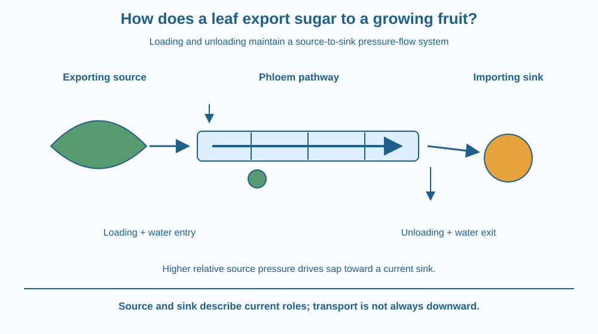

Trace sugars from a source region to a growing fruit through phloem. Identify loading, water entry, pressure-driven bulk flow and unloading. Distinguish making sugar from distributing it and recognise why source-to-sink direction is not always simply down the plant.
A green leaf can produce sugars while a growing fruit some distance away needs imported material. The fruit is not connected to a tiny conveyor belt carrying visible sugar grains along the branch.
Sugars move in solution through living transport tissues. Loading and unloading create conditions that support pressure-driven flow. To explain the journey, follow both sugar and water rather than treating the leaf as a factory whose products somehow reach every destination automatically.
The question is distribution within the plant, not a repeat of the mechanism that first makes sugars using light.
A source is a region supplying transportable organic material under the current conditions. A mature exporting leaf can be a source. A sink imports material for growth, use or storage; a developing fruit is a familiar example.
Phloem contains conducting cells called sieve-tube elements in flowering plants, supported by associated living cells including companion cells. Sieve plates connect the conducting pathway while allowing sap to move between elements.
Sugars, commonly transported as sucrose, are loaded into the phloem near a source. Many plants use energy-dependent loading steps, while other routes also exist. It is too absolute to claim that every species loads in exactly one way.
In a simplified pressure-flow model, increased solute loading encourages water entry from surrounding tissues, often connected with xylem water supply. The resulting turgor pressure near the source can become higher than at an unloading sink region.
That pressure difference drives bulk flow of sap along the pathway. The sap carries dissolved sugars with it. It is not necessary to imagine each sugar molecule individually walking the entire distance under its own power.
At the sink, sugars are unloaded and used or stored. Water can leave the pathway and rejoin other tissue routes, helping maintain the conditions for continued flow. Loading and unloading belong to one coupled system.
Source and sink identities can change. A storage organ can later export reserves, while a young leaf may import before becoming an exporter. Phloem transport can therefore occur upward or downward in different pathways according to the current source-sink relationship.
This differs from saying one sieve tube carries two opposed bulk streams through exactly the same space at the same moment. Different pathways can serve different directions. The network-level statement needs that qualification to avoid an oversimplified two-way-pipe picture.
Draw a source reservoir and a sink connected by a narrow pathway. Add sugar loading at the source, water entry and a higher-pressure label. At the other end, remove sugar and some water through unloading routes.
Trace one bulk-flow arrow between the ends. The pressure gradient explains movement through the pathway, while the loading and unloading processes establish and maintain the conditions.
Then reverse which organ is exporting in a new panel. The labels source and sink follow function rather than a permanent geographical top and bottom. This checks that the explanation is a transport model, not a memorised arrow pointing down every stem.
The SVG shows an exporting leaf region, a phloem pathway and an importing fruit region. Separate arrows mark sucrose loading, water entry, bulk sap movement and unloading.
Pressure labels identify the relative source-to-sink difference without assigning real numerical values. Companion cells are represented beside the conducting pathway, and sieve plates appear as simple separators with openings.
The drawing is not a full anatomical section or a repeat of blood circulation. Its purpose is the coupled pressure-flow mechanism and changing organ roles, with different transport directions represented by different pathways when needed.

A growing fruit depends on material imported from other plant regions as well as its own local functions. Crop growth therefore involves distribution, not only the presence of green leaves somewhere on the plant.
Orchard management can change canopy arrangement and demand, but this lesson does not prescribe pruning or feeding a crop. Those decisions require species and condition information beyond the transport diagram.
Students should not cut a stem, strip bark or inject coloured chemicals to test phloem movement. Such procedures can damage a plant and are unnecessary for the paper mechanism model.
Use paper and two colours for sugar and water.
Keep the direction tied to organ function. Do not label every path downward automatically. The model is qualitative and does not measure a real transport rate or claim identical loading in every plant species.
Why is sugar production alone insufficient to explain how a distant fruit receives material? Identify the missing transport and unloading steps.
Now imagine a storage organ exporting during renewed growth. How should the source and sink labels change? A useful biological label can describe a current role rather than a permanent identity attached to one organ.
Which tissue carries the source-to-sink sugar stream in this model?
Answer: B — Phloem sap carries organic materials through the plant transport network.
Why can sugar loading contribute to pressure-driven flow?
Answer: A — Loading can alter water movement and turgor, establishing a pressure difference.
A storage organ begins exporting reserves. What should the model do?
Answer: C — Source and sink describe current export and import functions.
Create a source-to-fruit transport diagram with separate sugar and water arrows, pressure comparison and unloading. Include one change of organ role in a second panel.
Your explanation must distinguish pressure-driven movement along the tube from the processes establishing the gradient. Avoid a universal downward-flow claim and state that the simplified model does not represent every loading mechanism or every pathway simultaneously.
The same organ can switch from importer to exporter as its role changes. Source and sink are functional relationships, not simply names for leaves and roots. Following that relationship makes a transport network understandable even when growth patterns change through the season.
Phloem translocation couples sugar loading and water-driven pressure with sink unloading; flow follows current source-sink relationships rather than one permanent downward direction.